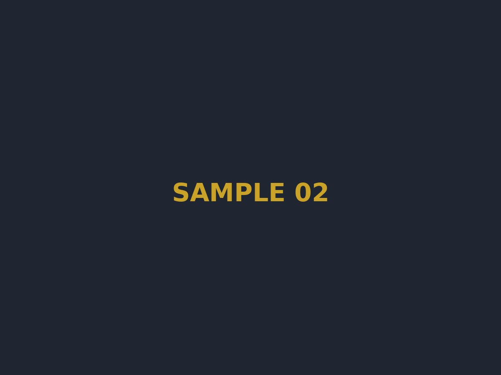
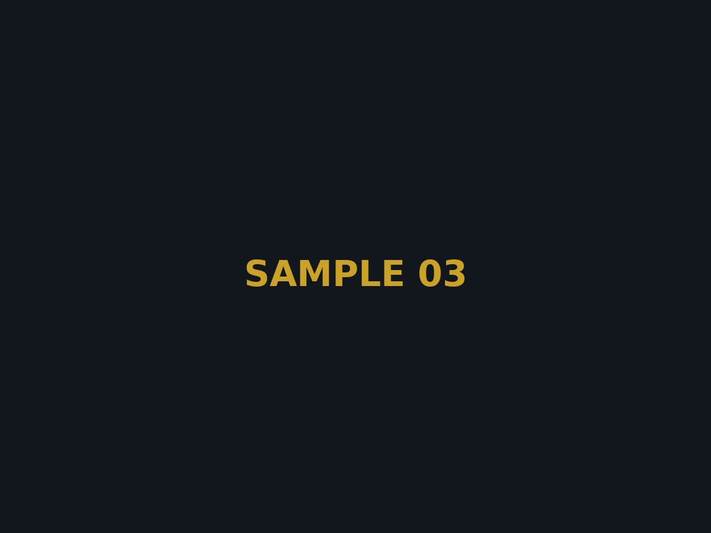
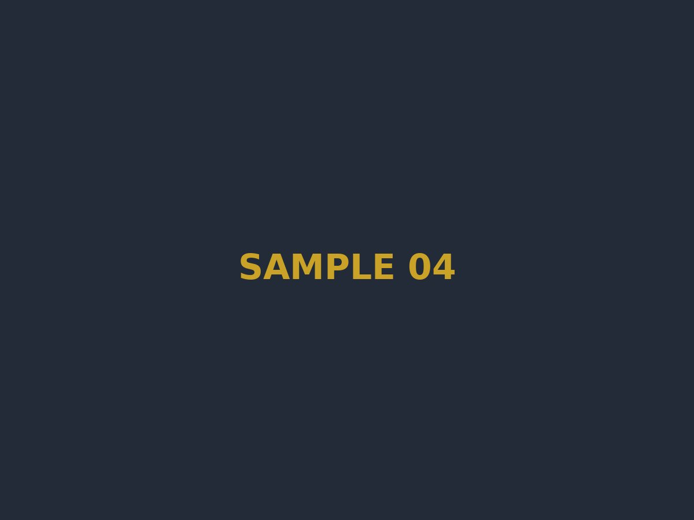

Development Division
難波市開発部長
だれ？
CITY GALLERY
街並み、暮らし、そしてそこに集う人々。難波市の"今"を写真でご紹介します。



公文書 第01号 市長メッセージ
かぴばらさんおねがい。
本市は、市民一人ひとりの情熱と協力によって築かれてまいりました。私たちが目指すのは、単なる仮想の街ではなく、誰もが誇りを持って「ただいま」と言える確かな居場所です。
伝統と革新を両輪に、これからも難波市は前進を続けます。市民の皆様と共に、この街の未来を創ってまいりましょう。「例」
公文書 第02号 組織紹介
「難波市開発部」
Development Division
だれ？
Chief Engineer
だれ？
難波市開発部職員
Development enginner
だれ？
公文書 第03号 組織紹介
難波市管理部
秩序と公正。難波市という舞台が成立するのは、見えない場所で街を支える者たちがいるからだ。
Security Section ─ Moderator統括
だれ？
Audit Section ─ Admin統括
だれ？
General Control ─ Hard Admin・最高権限
誰？